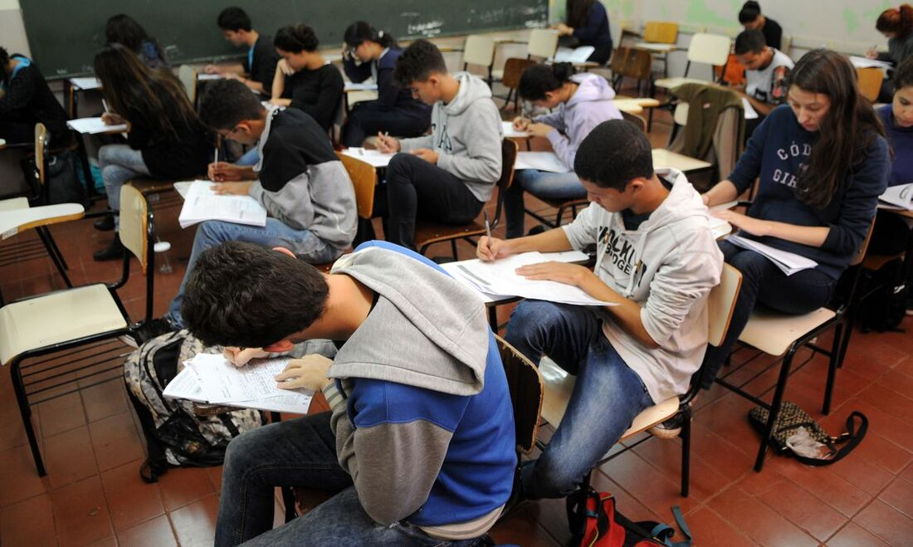
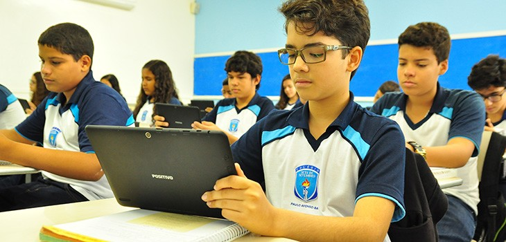
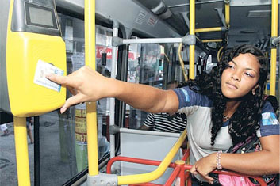

Bem-vindo aos Recursos Estudantis do CIEP 549 Michael Chaves Bastos!
É com grande entusiasmo que recebemos vocês na nossa sessão dedicada aos recursos estudantis. Esta é uma excelente oportunidade para conhecer as diversas ferramentas e suportes disponíveis para apoiar sua jornada acadêmica e garantir o máximo aproveitamento do seu tempo aqui.
Nosso objetivo é garantir que você esteja bem informado e saiba como acessar e utilizar esses recursos para alcançar o sucesso acadêmico e pessoal. Aproveite esta sessão para explorar, perguntar e se envolver.
Mais uma vez, bem-vindo! Estamos aqui para ajudar você a ter uma experiência acadêmica produtiva e enriquecedora.
Vamos começar!
1 - Apoio complementar ao aluno
Estamos comprometidos em oferecer um suporte abrangente para garantir o sucesso acadêmico e o bem-estar de nossos alunos. Nosso programa de apoio complementar é projetado para fornecer recursos adicionais e assistência personalizada, ajudando cada estudante a alcançar seu pleno potencial.

2 - Espaço para estudos
Nossos Espaços para Estudos são projetados para oferecer um ambiente ideal para o sucesso acadêmico, como ambientes silenciosos,
Acesso a recursos tecnológicos, Conforto e ergonomia, Áreas de leitura e pesquisa e um ambiente seguro e acolhedor.

3 - RioCard Escolar
O RioCard Escolar é uma ferramenta essencial que facilita o acesso dos estudantes ao transporte público, contribuindo para uma rotina escolar mais tranquila e segura.
Ele oferece várias vantagens, incluindo: Descontos e gratuidade, facilidade de uso, recarga prática, segurança
e monitoramento.
